화공기사(구) (2013-09-28 기출문제)
1과목: 화공열역학
1. 정압비열이 0.24kcal/kg·K인 공기 1kg 이 가역적으로 1atm, 10℃에서 1atm, 70℃ 까지 변화하였다면 엔트로피 변화는 몇 kcal/kg·K인가? (단, 공기는 이상기체로 간주한다.)
- 0.0131
- 0.0241
- 0.0351
- 0.0461
(정답률: 59%)

2. 다음 중 역행응축(retrograde condensation) 현상을 가장 유용하게 쓸수 있는 경우느?
- 기체를 잉계점으로 응축시켜 순수성분을 분리시킨다.
- 천연가스 채굴시 동력 없이 액화천연가스를 얻는다.
- 고체 혼합물은 기체화시킨 후 응축시켜 비휘발성 물질만을 얻는다.
- 냉동의 효유을 높이고 냉동체의 증방잠열을 최대로 이용한다.
(정답률: 72%)
3.
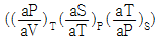
와 동일한 열역학 식은?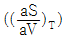
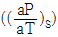
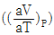
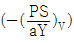
(정답률: 33%)
4. 가역과정(Reversible process)에 관한 설명 중 틀린 것은?
- 연속적으로 일련의 평형상태들을 거친다.
- 가역과정을 일으키는 계와 외부와의 포텐샬 차는 무한소이다.
- 폐쇄계에서 부피가 일정한 경우 내부에너지 변화는 온도와 엔트로피변화의 곱이다.
- 자연상태에서 일어나는 실제 과정이다.
(정답률: 61%)
5. 열용량이 일정한 이상기체의 PV 도표에서 일정 엔트로피곡선과 온도곡선에 대한 설명 중 옳은 것은?
- 두 곡선 모두 양(positive)의 기울기를 갖는다.
- 두 곡선 모두 음(negative)의 기울기를 갖는다.
- 일정 엔트로피곡선은 음의 기울기를, 일정 온도곡선은 양의 기울기를 갖는다.
- 일정 엔트로피곡선은 양의 기울기를, 일정 온도곡선은 음의 기울기를 갖는다.
(정답률: 42%)
6. 1kmol의 이상기체를 1atm, 22.4m3에서 10atm, 2.24m3로 등온압축시킬 때 이루어진 일의 크기는 약 몇 kcal인가? (단, Cp는 5cal°C-1mol-1, Cv는 3cal°C-1mol-1이다.)
- 1.249
- 1.375
- 1249
- 1375
(정답률: 39%)
7. 과잉 깁스(Gibbs)에너지 모델 중에서 국부조성(local composition)개념에 기초한 모델이 아닌 것은?
- NRTL(Non-Random-Two-Liquid) 모델
- 윌슨(Wilson) 모델
- 반라르(van Laar) 모델
- UNIQUAC(UNIversal QUAsi-Chemical) 모델
(정답률: 46%)
8. 이상용액에 대한 혼합의 불성변화(property change of mixing)를 옳게 설명한 것은?
- 부피 변화와 엔탈피 변화가 없다.
- 엔탈피 변화와 엔트로피 변화가 없다.
- 부피 변화와 깁스(Gibbs)에너지 변화가 없다.
- 엔트로피 변화와 깁스(Gibbs) 에너지 변화가 없다.
(정답률: 55%)
9. 헨리(Henry)의 법칡에 대한 설명 중 틀린 것은?
- 물속에 용해된 공기의 분을을 계산하고자 할 때 사용할 수 있다.
- 라을(Raoult)의 법칙에 적용범위를 넓힌 식이다.
- 헨리(Henry)의 상수를 사용한다.
- 라을(Raoult)의 법칙에서 액상의 비이상성을 고려한 법칙이다.
(정답률: 48%)
10. 성분 A, B, C 가 혼합되어 있는 계가 평형을 이룰 수 있는 조건으로 가장 거리가 먼 것은? (단, μ는 화학포텐셜, f는 퓨개시티, α, β, γ는 Tb는 비점을 나타낸다.)
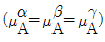
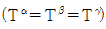
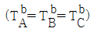
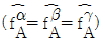
(정답률: 64%)
11. 카르노(Carnot)냉동기의 내부에서 90kJ을 흡수하여 주위온도가 37℃인 주위의 외부로 배출한다. 이 냉동기의 성능계수(cofficient of performance)가 9라 할 때, 옳지 않은 것은?
- 냉동기에 가해지는 순 일(net work)은 10kJ이다.
- 저온인 냉동기의 내부온도는 4.0℃이다.
- 외부에 배출되는 열은 100kJ이다.
- 성능계수가 10 이라면, 외부에 배출되는 열은 99kJ이다.
(정답률: 50%)
12. 깁스-두헴(Gibbs-Duhem) 방정식에 대한 설명으로 틀린 것은?
- 깁스-두헴(Gibbs-Duhem) 방정식은 부분몰 성징들의 관계에 대한 식이다.
- 깁스-두헴(Gibbs-Duhem) 방정식을 이용하면 이성분계에서 한 성분의 부분몰 성질을 알면 다른 부문몰 성질을 알 수 있다.
- 깁스-두헴(Gibbs-Duhem) 방정식은 기-액 상평형 계산을 수행하는 기본식이다.
- 깁스-두헴(Gibbs-Duhem) 방정식을 이용하여 기-액 상평형 자료의 건전성을 평가할 수 있다.
(정답률: 42%)
13. 깁스-두헴(Gibbs-Duhem) 식이 다음 식으로 표시될 경우는? (단, Xi는 I 성분의 조성,
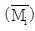
는 I 성분의 부분몰 특성이다.)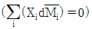
- 압력과 몰수가 일정할 경우
- 몰수와 성분이 일정할 경우
- 몰수와 성분이 같을 경우
- 압력과 온도가 일정할 경우
(정답률: 54%)
14. 단일상의 2성분계에 대하여 안정성의 판별기준에서 다음 ( )안에 알맞은 것은?
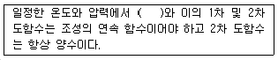
- △G
- △U
- △H
- △S
(정답률: 54%)
15. 이상용액에 관한 식 중 틀린 것은? (단, G는 깁스자유에너지, x는 액상 몰분를,
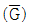
는 부분몰 깁스자유에너지이다.)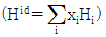
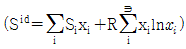
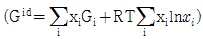
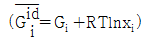
(정답률: 56%)
16. 이상기체 1몰이 일정온도에서 가역적으로 팽창할 경우 헬름홀츠(Helmholtz) 자유에너지(A)과 깁스(gibbs) 자유에너지(G)의 변화에 관하여 표현으로 옳은 것은?
- dA > dG
- dA < dG
- dA = -dG
- dA = dG
(정답률: 33%)
17. 내연기관 중 자동차에 사용되고 있는 것으로 흡입행정은 거의 정압에서 일어나며, 단열 압축 과정 후 전기 정화에 의해 단열 팽창하는 사이클은?
- 오토(Otto)
- 디젤(Diesel)
- 카르노(Carnot)
- 랭킨(Rankin)
(정답률: 57%)
18. 임계점에 대한 설명 중 틀린 것은?
- 임계점보다 높은 온도, 높은 압력을 갖는 영역을 유체영역이라고 한다.
- 임계점보다 포화액체의 내부에너지 값과 포화중기의 내부에너지 값은 서로 다르다.
- 임계온도 이상의 온도까지 정압가열과 등온압축 후, 임계온도 이하의 온도로 냉각함으로 액체를 증발과정 없이 기체로 변화시킬 수도 있다.
- 임계점에서는 액상과 증기상의 성질이 같아 서로 구별 할 수 없다.
(정답률: 46%)
19. 이상기체간의 반응 C2H4(g)+H2O(g)→C2H5OH(g)가 145℃에서 진행될 때 △G°=1685cal/mol이다. 이 반응의 평형상수는? (단, 기체상수 R은 1.987cal/mol·K 이다.)
- 0.0029
- 0.009
- 0.13
- 2.0
(정답률: 58%)
20. 기체성분 N2, H2 및 NH3를 포함하고 있는 화학 반응계의 자유도는?
- 1
- 2
- 3
- 4
(정답률: 48%)
2과목: 단위조작 및 화학공업양론
21. 미분수지(differential balance)의 개념에 대한 설명으로 가장 옳은 것은?
- 계에서의 물질 출입관계를 어느 두 질량기준 간격사이에 일어난 양으로 나타낸 것이다.
- 계에서의 물질 출입관계를 성분 및 시간과 무관한 양으로 나타낸 것이다.
- 어떤 한 시점에서 계의 물질 출입관계를 나타낸 것이다.
- 계로 특정성분이 유출과 관계없이 투입되는 총 누적 양을 나타낸 것이다.
(정답률: 49%)
22. 내부에너지를 나타내는 단위가 아닌 것은?
- Btu
- cal
- J
- N
(정답률: 52%)
23. 1L·atm은 약 몇 cal인가?
- 17.4
- 20.7
- 24.2
- 29.4
(정답률: 57%)
24. 5wt% NaOH 수용액을 시간당 500kg 씩 증발기 속으로 공급하여 25wt% 까지 농축하려고 한다. 이때 시간당 몇 kg 씩 물을 증발시켜야 하는가?
- 325
- 400
- 450
- 475
(정답률: 53%)
25. 지름이 10cm 인 파이프 속에서 기름의 유속이 10cm/s 일 때 지름이 2cm 인 파이프 속에서의 유속은 몇 cm/s인가?
- 50
- 100
- 250
- 500
(정답률: 54%)
26. 비중이 0.80 인 기름을 밀도단위로 나타내면 몇 kg/m3 인가?
- 400
- 414
- 800
- 980
(정답률: 65%)
27. 가스의 조성이 CH4 85vol%, C2H6 13vol%, N2 2vol% 일 때 이 가스의 평균분자량은?
- 15.6
- 18.06
- 20.22
- 22.13
(정답률: 69%)
28. 지름이 5cm인 관에서 물이 9.8m/s의 유속으로 분출되고 있다. 이 물은 약 몇 m 높이까지 올라가겠는가?
- 4.9
- 9.8
- 15
- 19.8
(정답률: 33%)
29. 벤젠을 25몰% 함유하는 용액이 1기압, 100℃ 상태에 있을 때 벤젠의 분압은? (단, 100℃에서 벤젠의 증기압은 1357mmHg 이다.)
- 0.25기압
- 339.25mmHg
- 1기압
- 1357mmHg
(정답률: 55%)
30. 다음과 같은 화학반응에서 공급물의 몰유량(molar flow rate)은 100kmol/h 이고, C2H4 40kmol/h 가 생산되고 CH4의 5kmol/h 로 병행되고 있다면 메탄에 대한 에틸렌의 선택도(selectivity) S는?
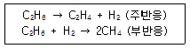
- S = 0.⑤mol CH4/mol 공급물
- S = 0.8mol 공급물/mol CH4
- S = 8molC2H4/mol CH4
- S = 8molC2H4/mol 공급물
(정답률: 46%)
31. 분배의 법칙이 성립하는 영역은 어떤 경우인가?
- 결합력이 상당히 큰 경우
- 용액의 농도가 묽을 경우
- 용질의 분자량이 큰 경우
- 화학적으로 반응할 경우
(정답률: 59%)
32. 혼합에 영향을 주는 물리적 조건에 대한 설명으로 옳지 않은 것은?
- 섬유상의 형상을 가진 것은 혼합하기가 어렵다.
- 건조분말과 습한 것의 혼합은 한 쪽을 분할하여 혼합한다.
- 밀도차가 클 때는 밀도가 큰 것이 아래로 내려가므로 상하가 고르게 교환되도록 회전방법을 취한다.
- 액체와 고체의 혼합 반죽에서는 습윤성이 적은 것이 혼합하기 쉽다.
(정답률: 62%)
33. 건조특성곡선에서 함율 건조기간으로부처 감율건조기간으로 이행하는 점을 무엇이라 하는가?
- 자유 함수율
- 평형 함수율
- 수축 함수율
- 임계 함수율
(정답률: 57%)
34. 캐비테이션(cavitation) 현상을 잘못 설명한 것은?
- 공동화(空洞化) 현상을 뜻한다.
- 펌프내의 증기압이 낮아져서 액의 일부가 증기화하여 펌프내에 응축하는 현상이다.
- 펌프의 성능이 나빠진다.
- 임펠러 흡입부의 압력이 유체의 증기압보다 높아져 증기는 임펠러의 고압부로 이동하여 갑자기 응축한다.
(정답률: 57%)
35. 2개의 관을 연결할 때 사용되는 관 부속품이 아닌 것은?
- 유니온(union)
- 니플(nipple)
- 소켓(socket)
- 플러그(plug)
(정답률: 53%)
36. 고체 혼합물 중 유효성분을 액체 용매에 용해시켜 분리회수하는 조작은?
- 증류
- 건조
- 침출
- 흡착
(정답률: 61%)
37. 증발관의 능력을 크게 하기 위한 방법으로 적합하지 않은 것은?
- 액의 속도를 빠르게 해준다.
- 증발관을 열전도도가 큰 금속으로 만든다.
- 장치내의 압력을 낮춘다.
- 증기측 격막계수를 감소시킨다.
(정답률: 54%)
38. 다음 중 높이가 큰 충전탑(packed tower)에서 충전물(packing)을 3~5m 높이로 나누어 여러 단으로 충전하는 가장 주된 이유는?
- 편류(channeling)현상을 작게 하기 위하여
- 압력강하(pressure drop)를 작게 하기 위하여
- Flooding(왕일)현상을 없애기 위하여
- 공급액(Feed)의 양을 줄이기 위하여
(정답률: 44%)
39. 1atm에서 메탄올의 몰분율이 0.4인 수용액을 증류하면 몰분율은 0.73으로 된다. 메탄올과 물의 비휘발도는?
- 3.1
- 4.1
- 4.7
- 5.7
(정답률: 44%)
40. 확산계수의 차원으로 옳은 것은? (단, L 은 길이, T 는 시간이다.)
- L/T
- L2/T
- L3/T
- L/T2
(정답률: 51%)
3과목: 공정제어
41.
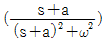
은 어느 함수의 Laplace transform 인가?- t cosωt
- e-at cosωt
- t sinωt
- eat cosωt
(정답률: 67%)
42. 블록다이아그램의 3차 제어계에서 다음 중 계가 안정한 경우에 해당하는 것은?
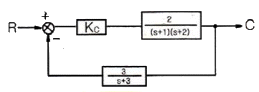
- Kc = 10
- 0 < kc < 10
- kc > 10
- kc < 10
(정답률: 23%)
43. 설정치(Set point)는 일정하게 유지되고, 외부교란변수(disturbance)가 시간에 따라 변화할 때 피제어변수가 설정치를 따르도록 조절변수를 제어하는 것은?
- 조정(Regulatory) 제어
- 서보(Servo) 제어
- 감시 제어
- 예측 제어
(정답률: 54%)
44. 다음 블록선도에서 전달함수 B/U2(S) 로 옳은 것은? (단, (G=GcG1G2G3H1H2)
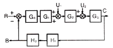
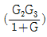
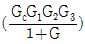
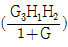
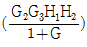
(정답률: 48%)
45. 차압 전송기(differential pressure transmitter)의 가능한 용도가 아닌 것은?
- 액체 유량 측정
- 액위 측정
- 기체 분압 측정
- 절대압 측정
(정답률: 44%)
46. 공정 G(s)=1/(s+1)를 위한 internal model control 에 근거하여 설계한 PI제어기 C(s)=101+1/s)의 문제점은?
- 설정치 응답이 부하응답에 비하여 늦다.
- 부하응답이 설정치 응답에 비하여 늦다.
- 불안정 해진다.
- 오프셋(offset)이 생긴다.
(정답률: 18%)
47. 안정한 2차계의 impluse response는 t(시간) → ∞ 에 따라 그 값이 어떻게 변하는가?
- 0 에 접근한다.
- 경우에 따라 다르다.
- 발산한다.
- 1 에 접근한다.
(정답률: 43%)
48. PID 제어기 조율에 관한 내용 중 옳은 것은?
- 시상수가 작고 측정잡음이 큰 공정에는 미분동작을 크게 설정한다.
- 시간지연이 큰 공정은 미분과 적분동작을 모두 크게 설정한다.
- 적분공정의 경우 제어기의 적분동작을 더욱 크게 설정한다.
- 시상수가 작을수록 미분동작은 작게 적분동작은 크게 설정한다.
(정답률: 47%)
49. 되먹임 제어계에 대한 설명으로 옳은 것은?
- 원래 안정한 공정에 되먹임 제어기를 설치하면 항상 안정하다.
- 원래 불안정한 공정은 되먹임 제어기를 설치해도 안정화 할 수 없다.
- 되먹임 제어기를 설치하면 정상상태에서 항상 오프셋이 제거된다.
- 되먹임 제어기를 설치하면 페루프 응답이 원래의 개루프 응답보다 빨라질 수 있다.
(정답률: 47%)
50. air-to-close 형 제어밸브에서 25% 열림에 해당하는 공기의 압력은 몇 psi 인가? (단, 제어밸브는 3-15psi 범위에서 동작한다.)
- 3
- 6
- 9
- 12
(정답률: 32%)
51. 다음 블록선도에서 전달함수 G(s)=C(s)/R(s)를 옳게 구한 것은?
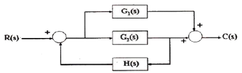
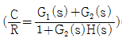
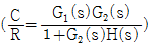
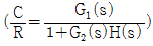
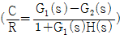
(정답률: 50%)
52. 피드포워드(feedforward) 제어에 대한 설명 중 옳지 않은 것은?
- 화학공정제어에서는 lead-lag 보상기로 피드포워드 제어기를 설계하는 일이 많다.
- 피드포워드 제어기는 폐루프 제어시스템의 안정도(stability)에 주된 영향을 준다.
- 일반적으로 제어계 설계시 피드포워드 제어는 피드백 제어기와 함께 구성된다.
- 피드포워드 제어기의 설계는 공정의 정적 모델, 혹은 동적 모델에 근거하여 설계될 수 있다.
(정답률: 45%)
53.
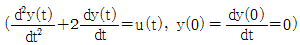
으로 표현되는 동특성 공정의 단위 계단 응답은?- (2e-t-2+t)U(t)
- (-2e-t-2+t)U(t)
- (e-t+1-t)U(t)
- 1/4(e-2t-1+2t)U(t)
(정답률: 43%)
54. 다음 공정에서 각속도 ω=0.5rad/min 의 정편파가 입력될 때 진폭비는? (단, s의 단위는 [1/min] 이다.)
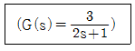
- 0.71
- 1.73
- 2.12
- 3.03
(정답률: 40%)
55. 다음 그림과 같은 제어계의 전달함수 Y(s)/X(s) 는?
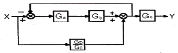
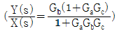
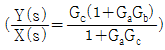
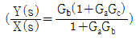
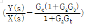
(정답률: 47%)
56. 현장에서 주로 쓰이는 대부분의 제어밸브가 등비(equal percentage) 조절특성을 나타내는 가장 큰 이유는?
- 밸브의 열림 특성이 좋기 때문이다.
- 밸브의 무반응 영역이 존재하지 않기 때문이다.
- 밸브의 공동화(cavitation)현상이 없기 때문이다.
- 설치밸브특성(installed vlve characteristics)이 선형성을 보이기 때문이다.
(정답률: 57%)
57. 제어변수의 온도를 측정하는 열전대의 수송지연이 0.5min 일 때 제어변수오 측정값 간의 전달함수는?
- e-0.5
- e-0.5s
- e0.5s
- e-0.5t2
(정답률: 53%)
58. 어떤 계의 전달함수
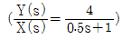
로 표시된다. 정상상태 이득(steady state gain)은?- 2
- 4
- 6
- 8
(정답률: 49%)
59. 공정의 전달함수가 G(s)=(-10s+2)/(s2+s+1)일 때, 1인 계단입력을 입력했다면, 공정출력에 대한 설명으로 옳은 것은?
- 초기부터 공정출력이 점점 증가하여 진동하면서 발산한다.
- 초기에 공정출력이 감소하다가 다시 증가하여 발산한다.
- 초기에 공정출력이 감소하다가 다시 증가하고 2로 진동하면서 수령한다.
- 초기부터 공정출력이 점점 증가하여 1로 진동하면서 수렴한다.
(정답률: 38%)
60. 조작변수와 제어변수와의 전달함수가
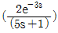
, 외란과 제어변수와의 전달함수가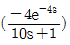
로 표현되는 공정에 대하여 가장 완벽한 외란보상을 위한 피드포워드 제어기 형태는?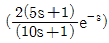
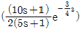
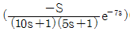
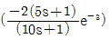
(정답률: 20%)
4과목: 공업화학
61. 접촉식 황산제조와 관계가 먼 것은?
- 백금 촉매 사용
- V2O5 촉매 사용
- SO3 가스를 황산에 흡수시킴
- SO3 가스를 물에 흡수시킴
(정답률: 53%)
62. 비료 중 P2O5 이 많은 순서대로 열거된 것은?
- 과린산석회 > 용성인비 > 중과린산석회
- 용성인비 > 중과린산석회 > 과린산석회
- 과린산석회 > 중과린산석회 > 용성인비
- 중과린산석회 > 소성인비 > 과린산석회
(정답률: 62%)
63. 포름알데히드를 원료로 하는 합성수지와 가장 관계가 없는 것은?
- 페놀수지
- 알키드수지
- 멜라민수지
- 요소수지
(정답률: 43%)
64. Lewis 산 촉매를 사용하는 friedel-Craft 반응과 유사하게 방향족에 일산화탄소, 염산을 반응시켜 알데히드를 도입하는 반응은?
- Canizzaro 반응
- Hofmann 반응
- Sandmeyer 반응
- Gattermann-koch 반응
(정답률: 30%)
65. 염화수소의 pKa 값은 -7이라고 하면 ka 값은 얼마인가?
- 107
- 103
- 10-3
- 10-7
(정답률: 48%)
66. 열가소성 수지에 해당하는 것은?
- 폴리바닐알코올
- 페놀 수지
- 요소 수지
- 멜라민 수지
(정답률: 62%)
67. 아크릴산 에스테르의 공업적 제법과 가장 거리가 먼 것은?
- Reppe 고압법
- 프로필렌의 산화법
- 에틸렌시안히드린법
- 에틸알코올법
(정답률: 44%)
68. 에틸렌을 황산 존재 하에서 가수분해 시켜 제조하는 제품은?
- CH3CH2OH
- CH3COOHC=CH
- CH3CHO
- CH3COOH
(정답률: 27%)
69. 지방산의 작용기를 표현한 일반식은?
- R-CO-R
- R-COOH
- R-OH
- R-COO
(정답률: 51%)
70. 일반적으로 원유 속에 거의 포함되어 있지 않지만 열분해등을 통해 다량 생성되는 탄화수소는?
- 파라핀 계
- 올레핀 계
- 나프텐 계
- 방향족 계
(정답률: 52%)
71. 합성염산 제조에 있어 식염용액의 전해로 생성되는 염소와 수소를 서로 반응 합성할 때 수소를 과잉 넣어 반응시키는 이유는?
- 반응을 정량적으로 진행시키기 위하여
- 반응열의 일부를 수소가스 가열로 소모시키기 위하여
- 반응장치의 부식을 방지하기 위하여
- 폭발을 방지하기 위하여
(정답률: 61%)
72. 암모니아 산화에 질산제소 공정에 있어서 조건이 옳지 않은 것은?
- NH3와 공기의 혼합기체를 촉매 하에 반응시켜 NO를 만든다.
- 백금, 백금·로듐 합금 등의 촉매를 사용할 수 있다.
- NO를 매우 높은 고온에서 산화하여 NO2로 한다.
- NO2를 물에 흡수시켜 HNO3로 한다.
(정답률: 51%)
73. 석유화학 공정 중 전화(conversion)와 정제로 구분할 대 전화공정에 해당하지 않는 것은?
- 분해(crackin)
- 알킬화(alkylation)
- 스위트닝(sweetening)
- 개질(reformin)
(정답률: 60%)
74. 중량평균 분자량 측정법에 해당하는 것은?
- 말단기분석법
- 분리막 삼투압법
- 광산란법
- 비정상승법
(정답률: 56%)
75. SO2가 SO3로 변화할 때 생성되는 (△H)은 약 얼마인가? (단, △Hf는 SO2:-70.96kcal/mol, SO3:-94.45kcal/mol 이다.)
- -165kcal/mol
- -95kcal/mol
- -71kcal/mol
- -24kcal/mol
(정답률: 65%)
76. 원유의 증류 시 탄화수소의 열분해를 방지하기 위하여 사용되는 증류법은?
- 상압증류
- 감압증류
- 가압증류
- 추츨증류
(정답률: 62%)
77. 질산의 성질과 용도에 대한 설명 중 틀린 것은?
- 강산으로서 강력한 산화제이다.
- 98wt% 이상의 진한 질산은 질소함유 비료 제조 원료나인광석 분해에 이용된다.
- 융점은 약 -42℃이고 분자량은 약 63 이다.
- 알루미늄이나 크롬은 진한 질산 속에서 산화피막을 생성하여 부동태가 된다.
(정답률: 41%)
78. 결정성 폴리프로필렌을 중합할 때 다음 중 가장 적합한 중합방법은?
- 양이온 중합
- 음이온 중합
- 라디칼 중합
- 지글러-나타중합
(정답률: 36%)
79. 포화식염수에 직류를 통과시켜 수산화나트륨을 제조할 때 환원이 알어나는 음극에서 생성되는 기체는?
- 염화수소
- 산소
- 염소
- 수소
(정답률: 55%)
80. H2SO4 60% HNO3 32% H2O 8% 의 질량조성을 가진 혼합산 100kg을 벤젠으로 니트로화 할 때 그 중 질산이 화학양론적으로 전부 벤젠과 반응하였다면 DVS(Dehydration Value of Sulfuric acid) 값은 얼마인가?
- 2.50
- 3.50
- 4.50
- 5.50
(정답률: 38%)
5과목: 반응공학
81. 반응에 대한 온도의 영향을 잘못 설명한 것은?
- 가역 흡열반응의 반응속도는 온도가 올라가면 커진다.
- 가역 흡열반응의 평형전화율은 온도가 올라가면 커진다.
- 가역 발열반응의 반응속도는 온도가 내려가면 작아진다.
- 가역 발열반응의 평형전화율은 온도가 내려가면 작아진다.
(정답률: 13%)
82. 80% 전화율을 얻은데 필요한 공간시간이 4h 인 혼합흐름 반응기에서 3L/min을 처리하는데 필요한 반응기 부피는 몇 L인가?
- 576
- 720
- 900
- 960
(정답률: 48%)
83. A→R 과 같은 균일계 2차 반응이 혼합반응기에서 50% 전환율로 진행되었다. 반응기의 크기를 2배로 증가시킬 경우에는 전환율이 얼마나 되겠는가? (단, 다른 조건은 동일하다고 가정한다.)
- 50%
- 61%
- 67%
- 100%
(정답률: 45%)
84. 반감기가 5.2 일인 Xe-133을 혼합흐름반응기(MFR)에서 30일 동안 처리한다. 반응기에서 제거되는 방사능의 분율(fraction of activity)는?
- 0.8
- 0.6
- 0.4
- 0.2
(정답률: 9%)
85. 다음 속도 데이터를 이용하여 플러그 흐름 반응기를 직렬로 연결한 후 중간 전화율이 40%, 최종 전화율이 80% 일 때의 반응기 부피 V1과 V2의 합에 가장 근사한 값은 약 몇 L인가? (단, 초기 반응물 유입속도는 FAo=0.921mol/s 이다.)
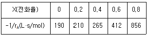
- 450
- 350
- 250
- 150
(정답률: 18%)
86. 20atm에서 A 50% 와 불활성물 50% 로 이루어진 기체혼합물이 500°F에서 10dm3/s의유속으로 반응기로 유입된다. 유입되는 A의 농도 CAO와 유입 몰유량 FAO는 얼마인가? (단, 기체상수 R=0.082dm3·atm/mol·K이다.)
- CAO=20.29mol/dm3, FAO=2.29mol/s
- CAO=20.29mol/dm3, FAO=20.29mol/s
- CAO=0.229mol/dm3, FAO=2.29mol/s
- CAO=0.229mol/dm3, FAO=20.29mol/s
(정답률: 27%)
87. 부피 3.2L인 혼합흐름 반응기에 기체 반응을 A가 1L/s로 주입되고 있다. 반응기에서는 A→2P 의 반응이 일어나며 A의 전화율은 60% 이다. 반응물의 평균체류시간은?
- 1초
- 2초
- 3초
- 4초
(정답률: 15%)
88. A + B →AB가 비가역반응이고, 그 반응속도식이
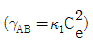
일 때 이 반응의 예상되는 메커니즘은? (단, k_1, k_2는 각각 k1, k2의 역반응속도상수이고 표시 "*"는 중간체를 의미한다.)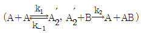
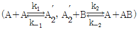
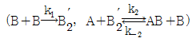
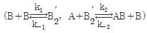
(정답률: 30%)
89. CSTR 반응기에서 오른쪽 그림의 ABCD 의 면적은? (단, CAO는 초기농도, FAO는 공급몰속도, XA는 전화율, CA는 반응속도, V는 반응기부피, r는 공간시간이다.)
- τ
- τ/CAo
- V/FAo
- XA/-rA
(정답률: 30%)
90. 액상반응 2A→R이 플러그흐름 반응기에서 일어난다. 반응속도 이고 반응물의 공급속도 0.01mol/h 이며 반응기의 부피는 0.1L, 공급물의 부피유량은 0.⑤L/min 일 때, 이 반응기에 대한 공간 시간(space time)은 몇 min 인가?
- 0.5
- 2
- 5
- 10
(정답률: 42%)
91. 반응장치 내에서 일어나는 열전달 현상과 관련된 설명으로 틀린 것은?
- 발열반응의 경우 관형 반응기 직경이 클수록 관중심의 온도는 상승한다.
- 급격한 온도의 상승은 촉매의 활성을 저하시킨다.
- 모든 반응에서 고온의 조건이 바람직하다.
- 전열조건에 의해 반응의 전화율이 좌우된다.
(정답률: 55%)
92. 어떤 물질의 분해속도가 1차 반응으로 표시된다. 90% 분해하는데 100분이 걸렸다면 50% 분해하는 데에는 얼마의 시간이 걸리겠는가?
- 55.6분
- 43.2분
- 30.1분
- 13.1분
(정답률: 43%)
93. 플러그흐름반응기에서 다음과 같은 1차 연속반응이 일어날 때 중간생성물 R의 최대농도 CA·max와 그 때의 공간시간 tv·out은? (단, k1과 k2의 값은 서로 다르다.)
(정답률: 41%)
94. 일정한 온도로 조작되고 있는 순환비가 3인 순환플러그 흐름 반응기에서 1차 액체반응 A → R 이 40%까지 전화되었다. 만일 반응계의 순환류를 폐쇄시켰을 경우 전화율은 얼마인가? (단, 다른 조건은 그대로 유지한다.)
- 0.26
- 0.36
- 0.46
- 0.56
(정답률: 25%)
95. 액상반응 이 혼합 반응기에서 진행되어 55%의 전화율을 얻었다. 만일 크기가 6배인 똑같은 성능의 반응기로 대체한다면 전화율은 어떻게 되겠는가?
- 60%
- 78%
- 88%
- 90%
(정답률: 45%)
96. 반응전화율은 온도에 대하여 나타낸 직교좌표에서 반응기에 열을 가하면 기울기는 단열과정에서보다 어떻게 되는가?
- 증가한다.
- 감소한다.
- 일정하다.
- 반응열의 크기에 따라 증가 또는 감소한다.
(정답률: 11%)
97. 1차 반응인 A→R, 2차 반응(desired)인 A→S, 3차 반응인 A→T에서 S가 요구하는 물질일 경우 다음 중 옳은 것은?
- 플러그흐름반응기를 쓰고 전화율은 낮게 한다.
- 혼합흐름반응기를 쓰고 전화율을 낮게 한다.
- 중간수준의 A 농도에서 혼합흐름반응기를 쓴다.
- 혼합흐름반응기를 쓰고 전화율을 높게 한다.
(정답률: 38%)
98. 다음과 같은 반응에서 R을 많이 얻기 위한 방법은?
- A의 농도를 높여야 한다.
- A의 농도를 낮춰야 한다.
- 반응온도를 높여야 한다.
- 반응온도를 낮춰야 한다.
(정답률: 39%)
99. 다음과 같은 효소발효반응이 플러그흐름반응기에서 CAO=2mol/L, v=25L/min 의 유입속도로 일어난다. 95% 전화율을 얻기 위한 반응기 체적은 몇 m3인가?
- 1
- 2
- 3
- 4
(정답률: 34%)
100. CSTR 반응기에서 r(공간 시간)을 틀리게 표현한 항은?
- V/VO :（반응물 부피/유입 되는 부피속도)
- CAOV/FAO : (반응기 내의 몰수/유입되는 초기 몰속도)
- 1/S : (1/공간속도)
- : (속도와 전화율 곡선에서의 일정구간의 곡선 아래 면적에 초기농도의 곱항)
(정답률: 47%)
ΔS = ∫(dq/T)
여기서 dq는 열량 변화량, T는 온도이다. 이 문제에서는 가역과정이므로, 열량 변화량은 다음과 같이 계산할 수 있다.
dq = CpdT
여기서 Cp는 공기의 등압비열이다. 따라서, 엔트로피 변화는 다음과 같이 계산할 수 있다.
ΔS = ∫(CpdT/T)
이를 적분하면,
ΔS = Cp ln(T2/T1)
여기서 T1은 초기 온도이고, T2는 최종 온도이다. 따라서, ΔS는 다음과 같이 계산할 수 있다.
ΔS = Cp ln(T2/T1) = 1.0⑤ * ln(343/283) = 0.0461 kcal/kg·K
따라서, 정답은 "0.0461"이다.